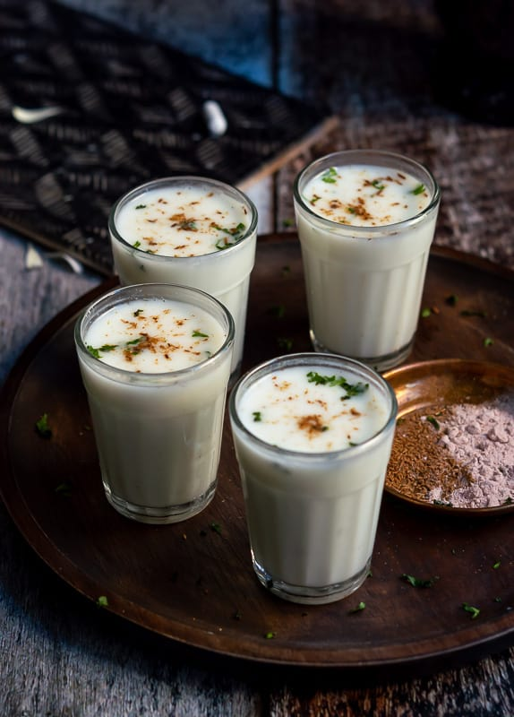

Lassi is a blended yogurt drink that is very popular in the Northern Parts of India. It is made with blending curd (also called dahi in Hindi) or yogurt with water, salt or sugar and a few spices or herbs. There are many variations of making this drink. Lassi is made both sweet and salty. Lassi is also a probiotic drink as obviously it is made from curd or yogurt which has gut friendly bacteria in it. Here I share easy and flavorful sweet lassi recipe variation you can make at home.
First, in a mortar, take 8 to 10 green cardamom pods and crush them lightly. Then remove the husk and crush the seeds to a fine powder or use pre-made ground cardamom
Now, in a bowl or pan, take 2 cups fresh chilled yogurt or homemade curd. Next, with a handheld wooden churner (called madani in Hindi) or an immersion blender or a wired whisk, whip the curd until it becomes smooth.
Now add 4 to 5 tablespoons sugar or as needed. Pour 1 cup cold water in it. Now begin to churn or blend the lassi mixture until the sugar dissolves and you see a nice frothy layer on top.
Now add 1 teaspoon of the crushed cardamom powder and 10 to 12 crushed saffron strands.
Pour lassi in tall glasses and serve. You can add ice cubes to your lassi if you prefer.